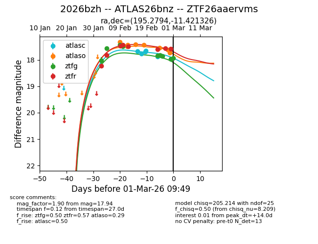
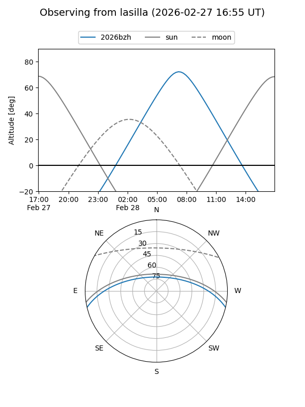
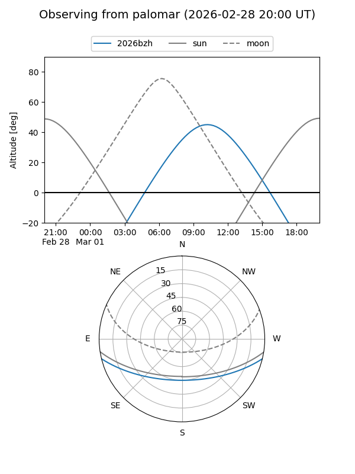
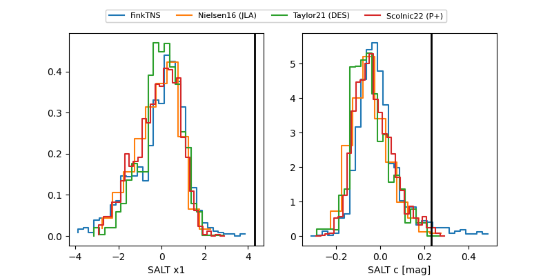

2026bzh
Target 2026bzh at 2026-03-01 09:50
Aliases and brokers:
FINK: link
Lasair: link
ALeRCE: link
TNS: link
YSE: link
alt names
ZTF26aaervms (ztf,fink_ztf)
2026bzh (tns,yse)
ATLAS26bnz (atlas)
Coordinates:
equatorial (ra, dec) = 195.2794,-11.42133
equatorial (HMS+DMS) = 13:01:07.06,-11:25:16.77
galactic (l, b) = (306.7339,+51.37895)
Flags:
Photometry:
last atlasc=17.88, atlaso=17.73, ztfg=17.94, ztfr=17.58
5 atlasc, 8 atlaso, 9 ztfg, 8 ztfr detections
Lightcurve

Visibility


Additional plots
